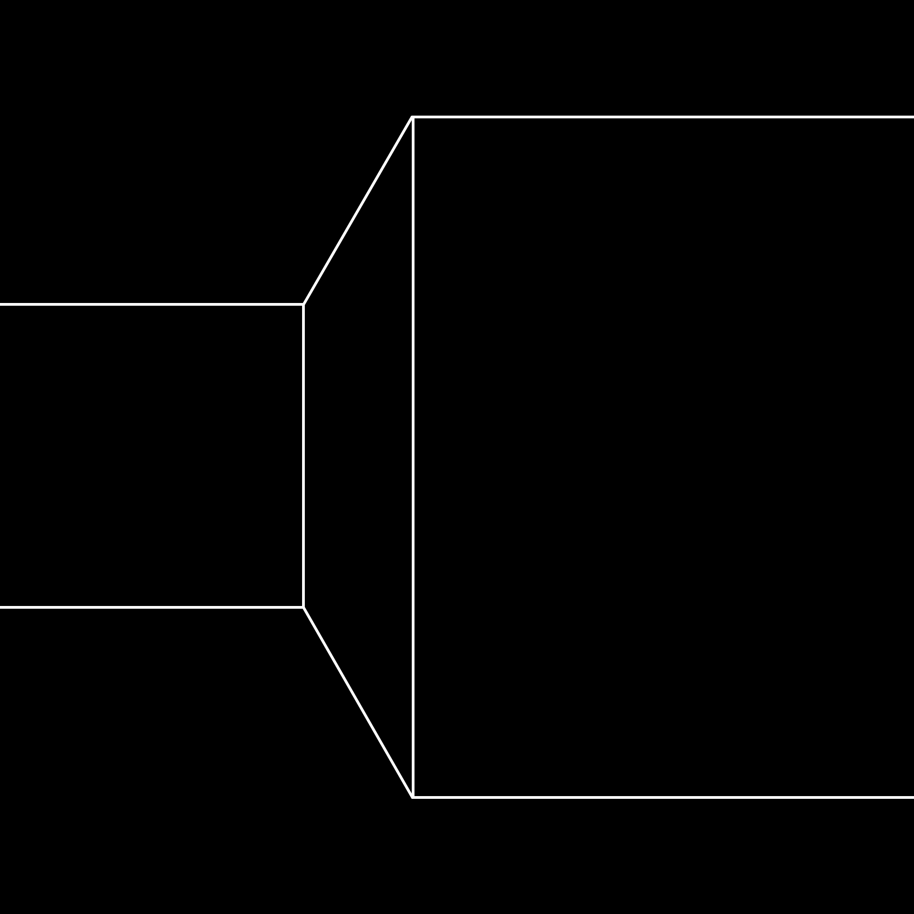

An act of the mind. To move, to make happen, to make manifest. Be an act of Congress. A state of real existence rather than possibility. And poets love possibility! They love to wonder and explore. Hard lot! But the poem, no matter how full of possibility, has to exist! To conduct oneself, to behave.
How a poem acts marks its individual character. A poem by Glandolyn Blue does not sound like a poem by Timothy Sure. to pretend, feign, impersonate. That, too, yes and always, because self-consciousness is its own pretension, and has been from its beginning; the human mind is capable of a great elastic theatre.
As the poet Ralph angel puts it, “The poem is an interpretation of weird theatrical shit.” the weird theatrical shit is what goes on around us every day of our lives; an animal of only instinct, Johnny Ferret, has in his actions drama, but no theater; theater requires that you draw a circle around the action
and observe it from outside the circle; in other words, self-consciousness is theatre.